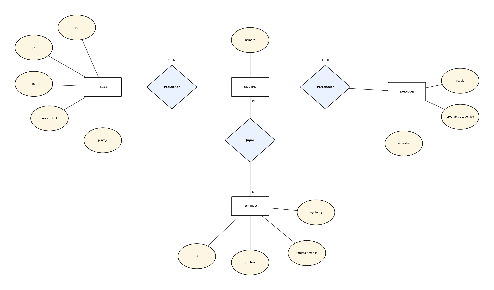

Modelos entidad–relación de clase
Torneo de fútbol universitario
Contexto: primer modelo del semestre. Un torneo interno donde los equipos están formados por estudiantes, juegan partidos entre sí y ocupan una posición en la tabla.
Supuestos: un jugador pertenece a un solo equipo (1:N); un equipo juega muchos partidos y cada partido lo juegan varios equipos (M:N); cada equipo tiene una fila en la tabla con PG, PE, PP, puntaje y posición.

Mirándolo con lo que sé ahora: a EQUIPO, TABLA y JUGADOR les falta subrayar su clave; semestre quedó suelto sin línea hacia JUGADOR; y puntaje y las tarjetas no son del partido solo, son de cada equipo en ese partido, así que irían en la relación JUGAR. Lo dejo como estaba para que se vea el progreso.
Librería en línea (modelo corregido)
Contexto: una librería que vende libros escritos por autores y publicados por editoriales; los libros se guardan en almacenes y los clientes arman cestas de compra. Partimos de un diagrama de referencia con errores y lo corregimos.
Correcciones aplicadas
- AUTOR tenía como clave la dirección, que no identifica a nadie: se usa id_autor.
- El nombre del EDITOR no garantiza unicidad: se usa id_editor.
- CLIENTE se identifica por email.
- Una cesta pertenece a un solo cliente: TIENE pasa de M:N a 1,1.
- Un libro tiene una sola editorial: EDITADO_POR pasa a 1,1.
- "numero" en CONTIENE y ALMACENA era ambiguo: se renombra a cantidad.
Supuesto: agregamos fecha a CESTA_DE_COMPRA porque una cesta sin fecha no deja saber cuándo se compró.
Cargando modelo…
La reducción a tablas de este mismo modelo está en Reducción a tablas en clase.
CineAndes
Contexto: una cadena de cines con varias sedes. Cada sede tiene salas, cada sala tiene sillas, y en las salas se programan funciones de películas. Los clientes compran boletas y pagan con distintos medios; hay empleados (proyeccionistas y taquilleros) y proveedores que entregan productos.
Lo que tiene este modelo:
- Entidades débiles en cadena: SALA depende de SEDE y SILLA depende de SALA (fila + número solo identifican dentro de la sala).
- Compuesto: direccion de SEDE (ciudad, calle). Derivados: antiguedad de PELICULA y edad de CLIENTE.
- Recursivas: ES_SECUELA_DE entre películas (roles secuela / precuela) y SUPERVISAR entre empleados con fecha_desde.
- Especialización: EMPLEADO → PROYECCIONISTA (certificacion_tecnica) y TAQUILLERO (caja_asignada).
- N:M con atributos: COMPRAR (cantidad_boletas, canal) y ENTREGAR (cantidad, fecha_entrega).
Cargando modelo…
Desafíos
Elegir bien la clave
En la Librería la dirección era la clave del autor. Parece un detalle, pero si dos autores comparten oficina el modelo se rompe. Ahora siempre me pregunto si el atributo de verdad identifica a uno solo.
Cardinalidades del negocio, no del dibujo
TIENE y EDITADO_POR estaban como M:N. Tocó volver al negocio: una cesta es de un solo cliente, un libro sale de una sola editorial.
Débiles que dependen de débiles
En CineAndes, SILLA no se identifica sola ni con la sala sola: necesita sede + sala + fila + número. Es la misma debilidad encadenada que después vimos con RECALADA en el Taller 1.